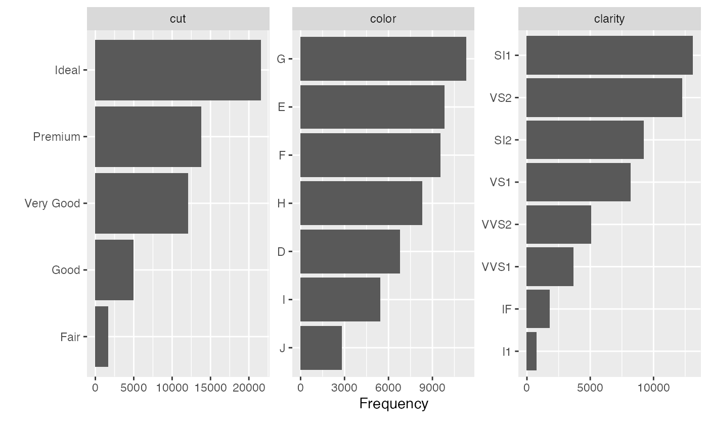
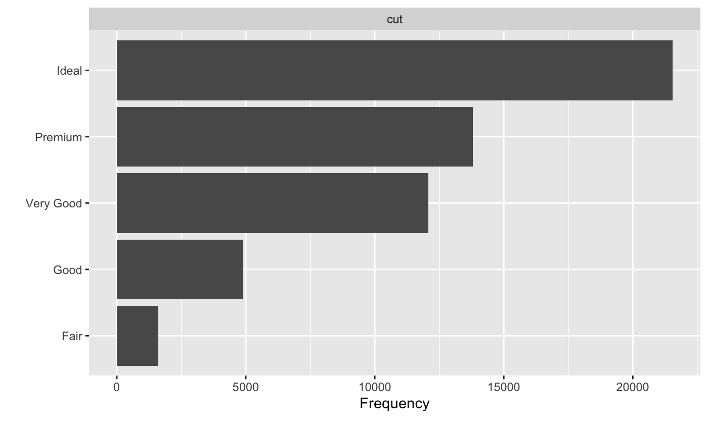
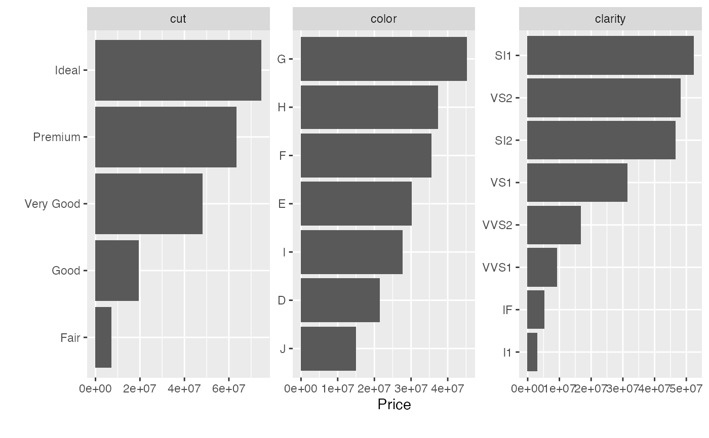

plot_bar.RdPlot bar chart for each discrete feature, based on either frequency or another continuous feature.
plot_bar(data, with = NULL, maxcat = 50, order_bar = TRUE, binary_as_factor = TRUE, title = NULL, ggtheme = theme_gray(), theme_config = list(), nrow = 3L, ncol = 3L, parallel = FALSE)
| data | input data |
|---|---|
| with | name of continuous feature to be summed. Default is |
| maxcat | maximum categories allowed for each feature. Default is 50. |
| order_bar | logical, indicating if bars should be ordered. Default is |
| binary_as_factor | treat binary as categorical? Default is |
| title | plot title |
| ggtheme | complete ggplot2 themes. Default is theme_gray. |
| theme_config | a list of configurations to be passed to theme |
| nrow | number of rows per page. Default is 3. |
| ncol | number of columns per page. Default is 3. |
| parallel | enable parallel? Default is |
invisibly return the named list of ggplot objects
If a discrete feature contains more categories than maxcat specifies, it will not be passed to the plotting function.
plot_bar(diamonds, maxcat = 5)#> #> #># Plot bar charts with `price` feature plot_bar(diamonds, with = "price")